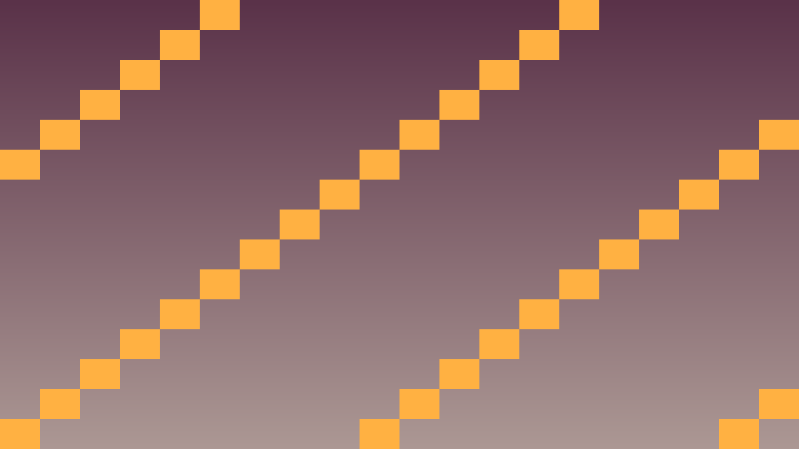
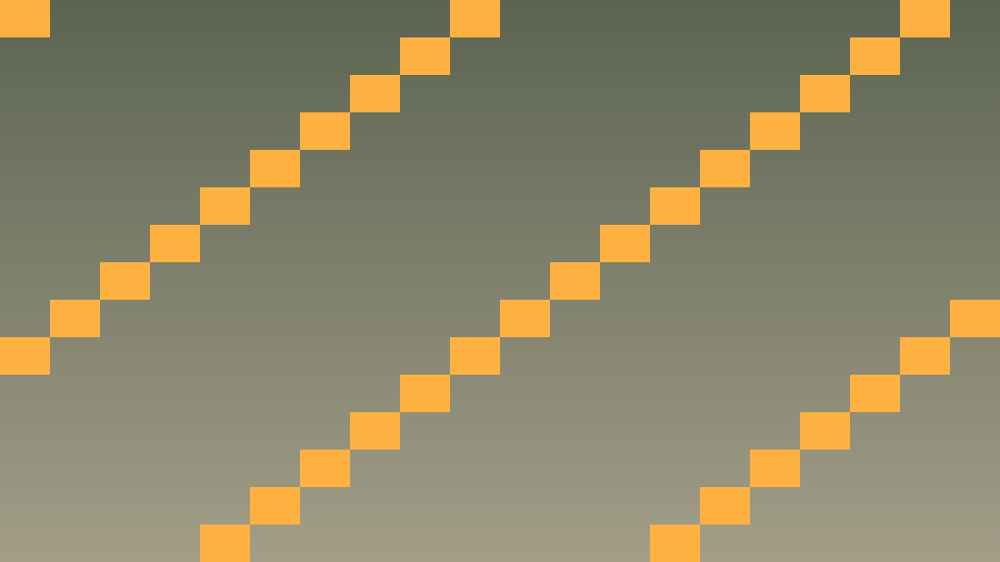

Tavs šīs stundas izaicinājums: Saprast un implementēt pathfinding (ceļa meklēšana) algoritmu spēles AI.
Pirms sāc: izmanto iepriekš apgūto un šīs lapas teorijas/koda piemērus. Ja vajadzīga jauna komanda vai rīks, vispirms atrodi tās paraugu teorijas sadaļā.
Reālistiska AI prasa pathfinding — meklēt īsāko ceļu starp diviem punktiem, izvairoties no šķēršļiem.
A* algoritms izmanto:
Godot 4 piedāvā NavigationAgent2D kas to dara automātiski.
#include <godot_cpp/classes/navigation_agent2d.hpp>
class Enemy : public CharacterBody2D {
NavigationAgent2D *nav_agent;
public:
void _ready() override {
nav_agent = get_node<NavigationAgent2D>("NavigationAgent2D");
nav_agent->set_target_position(player_pos);
}
void _physics_process(double delta) override {
if (nav_agent->is_navigation_finished()) return;
Vector2 next_pos = nav_agent->get_next_path_position();
Vector2 dir = (next_pos - get_position()).normalized();
velocity = dir * speed;
move_and_slide();
}
};Atceries: šajā stundā nepietiek tikai panākt redzamu efektu editorā. Paskaidro, kura C++ klase glabā stāvokli, kura metode to maina un kā Godot node struktūra šo kodu izmanto.
Pārbaudi: C++ kodā pamatoti izvēlēti vector/map/set, AI stāvokļi ir skaidri, un sarežģītākas sistēmas var profilēt vai atkļūdot.
#include <godot_cpp/variant/string.hpp>
using namespace godot;
struct AiDataCheckpoint {
String lesson = "4.4 Pathfinding ar A*";
bool uses_cpp = true;
bool chooses_container = true;
bool separates_ai_state = true;
bool handles_removal_safely = true;
};Šis ir īss iesildīšanās uzdevums. Nokopē sagatavi, ielīmē to pareizajā koda vietā un palaid. Šeit pietiek droši izmēģināt tēmu 4.4 Pathfinding ar A*; detalizētu izpratni veidosi nākamajos uzdevumos.
Kopējamais piemērs vai sagatave: izmanto šo bloku kā starta punktu, nevis kā gala risinājumu.
#include <godot_cpp/variant/string.hpp>
using namespace godot;
struct AiDataCheckpoint {
String lesson = "4.4 Pathfinding ar A*";
bool uses_cpp = true;
bool chooses_container = true;
bool separates_ai_state = true;
bool handles_removal_safely = true;
};.cpp vai .hpp failā pie šīs stundas klases.Pievieno šīs stundas paņēmienu kā nelielu, strādājošu spēles mehānikas daļu.
PlayerState, velocity, score vai update_ui()._ready(), _process(), _physics_process(), signāla apstrādātāja vai projekta palīgklases.Pārbaudi, vai C++ algoritms darbojas paredzami spēles vidē.
Ja pamatdarbs ir pabeigts, paplašini spēli ar vienu nelielu C++ uzlabojumu.


#include <godot_cpp/classes/navigation_agent2d.hpp>
#include <godot_cpp/classes/character_body2d.hpp>
void Enemy::_ready() {
nav_agent = get_node<NavigationAgent2D>("NavigationAgent2D");
nav_agent->set_avoidance_enabled(true);
update_target();
}
void Enemy::_physics_process(double delta) {
if (nav_agent->is_navigation_finished()) return;
Vector2 current = get_position();
Vector2 next = nav_agent->get_next_path_position();
Vector2 direction = (next - current).normalized();
velocity = direction * speed;
move_and_slide();
}
void Enemy::update_target() {
if (player) nav_agent->set_target_position(player->get_position());
}